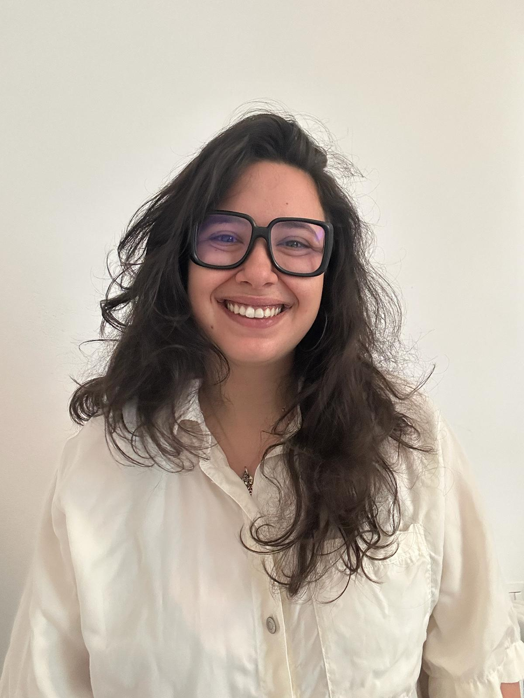

JUL
2026
Conference
WCCM–ECCOMAS 2026
Presentation of recent work on brain electrophysiology and its interaction with protein-spreading dynamics in Munich.
View details ↗Mathematical and numerical modelling of the brain
PhD student · MOX Laboratory
Politecnico di Milano
I develop mathematical models and numerical methods to study brain electrophysiology, neurological disorders and their interaction with metabolic and protein-spreading dynamics.

Brain electrophysiology and computational neuroscience
About
I am a PhD student at the Department of Mathematics of Politecnico di Milano and a member of the MOX Laboratory.
My work lies at the intersection of numerical analysis, computational neuroscience and scientific computing.
I am particularly interested in accurate and efficient simulations of physiological and pathological neuronal activity, including epilepsy and cerebral ischemia.
I also study multiphysics couplings between electrophysiology, cellular metabolism and the spreading of pathological proteins.
Latest news
Conference
Presentation of recent work on brain electrophysiology and its interaction with protein-spreading dynamics in Munich.
View details ↗Publication
New developments in the open-source MATLAB library for high-order polytopal discontinuous Galerkin methods.
View details ↗Visiting period
Research visit focused on coupled bulk-network models for electrophysiological propagation.
View details ↗Contact
MOX Laboratory
Department of Mathematics
Politecnico di Milano
Piazza Leonardo da Vinci 32, Milano